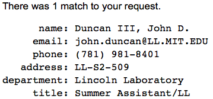
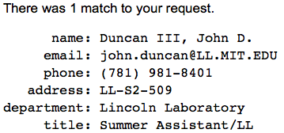

Utopian Philosopher, Paramedia Ecologist, Artist


In some far off place
Many light years in space
I'll wait for you.
Where human feet have never trod,
Where human eyes have never seen.
I'll build a world of abstract dreams
And wait for you.
Sun Ra, Liner notes to Monorails and Satellites [1968]
``He stepped down, trying not to look long at her, as if she were the sun, yet he saw her, like the sun, even without looking."
(Leo Tolstoy, Anna Karenina)
``I can see the sun, but even if I cannot see the sun, I know that it exists. And to know that the sun is there - that is living."
(Fyodor Dostoyevsky, The Brothers Karamazov)
``We sometimes encounter people, even perfect strangers, who begin to interest us at first sight, somehow suddenly, all at once, before a word has been spoken."
(Fyodor Dostoyevsky, Crime and Punishment)
``Good communication is as stimulating as black coffee, and just as hard to sleep after."
``Him that I love, I wish to be free – even from me."
(Anne Morrow Lindbergh)
``It is inconceivable that something is lost forever."
(The Instructions of Shuruppak, 2600 BCE)
Selected Quotes:
``Ne marche pas devant moi, je ne suivrai peut-être pas. Ne marche pas derrière moi, je ne te guiderai peut-être pas. Marche juste à côté de moi et sois mon ami."
(Albert Camus)
``Information is not knowledge. Knowledge is not wisdom. Wisdom is not truth. Truth is not beauty. Beauty is not love. Love is not music. Music is the best."
(Frank Zappa)
242 nij2-nam nu-kal zi ku7-ku7-da
243 nij2 nam-kal-kal-en nij2-e me-kal-kal
244 dumu-ju10 gun3-gun3-gin7 igi gun3-gun3
``Nothing at all is to be valued, but life should be sweet. You should not serve things; things should serve you. My son, ......."
(Instructions of Shuruppak [2600 BCE])
``The earth cannot move without music. The earth moves in a certain rhythm, a certain sound, a certain note. When the music stops the earth will stop and everything upon it will die."
(Sun Ra, Space is the Place)
``Music is a plane of wisdom, because music is a universal language, it is a language of honor, it is a noble precept, a gift of the Airy Kingdom, music is air, a universal existence … common to all the living. Music is existence, the key to the universal language. Because it is the universal language."
(Sun Ra, The Neglected Plane of Wisdom)
``I see them as they are to is And not the seeming isness of the was."
(Sun Ra, The Differences [1970])
``If death is the absence of life, then death's death is life."
(Sun Ra)
``Musical innovation is full of danger to the State, for when modes of music change, the fundamental laws of the State always change with them."
(Plato, The Republic)
``I am a citizen, not of Athens, or Greece, but of the world."
(Socrates [5th Century B.C.], Diogenes of Sinope)
``I am searching for the bones of your father but cannot distinguish them from those of a slave."
``I have nothing to ask but that you would remove to the other side, that you may not, by intercepting the sunshine, take from me what you cannot give."
(Diogenes of Sinope, in response to Alexander the Great)
``Freedom takes a lot of effort."
(Anna Stepanovna Politkovskaya)
``Socialism never took root in America because the poor see themselves not as an exploited proletariat but as temporarily embarrassed millionaires."
(John Steinbeck)
``I cannot say with certainty that I exist, I cannot say for certain that you exist and I cannot say for certain that this conversation exists"
(Alan Greenspan, Barbara Branden's recount of conversation with Greenspan before she introduced him to Ayn Rand)
``Man is now only more active — not more happy — nor more wise, than he was 6000 years ago."
``Music is the perfection of the soul, or idea, of Poetry."
(Edgar Allan Poe to James Russell Lowell [July 2, 1844])
``"It might be engineering, Or it might be art. We'll actually see that computer so-called 'science' actually has a lot in common with magic."
(Hal Abelson, MIT SICP Lectures)
``This life, as you now live it and have lived it, you will have to live once more and innumerable times more; and there will be nothing new in it, but every pain and every joy and every thought and sigh… must return to you—all in the same succession and sequence—even this spider and this moonlight between the trees and even this moment and I myself. The eternal hourglass of existence is turned over again and again—and you with it, speck of dust!
(Demon in Friedrich Nietzsche's The Gay Science)
``Loneliness does not come from having no people about one, but from being unable to communicate the things that seem important to oneself, or from holding certain views which others find inadmissible."
(C.G. Jung)
``I do not believe in the creed professed by the Jewish church, by the Roman church, by the Greek church, by the Turkish church, by the Protestant church, nor by any church that I know of. My own mind is my own church."
``All national institutions of churches, whether Jewish, Christian, or Turkish, appear to me no other than human inventions set up to terrify and enslave mankind, and monopolize power and profit."
``The christian religion is a parody on the worship of the Sun, in which they put a man whom they call Christ, in the place of the Sun, and pay him the same adoration which was originally paid to the Sun."
(Thomas Paine)
``The Government of the United States of America is not in any sense founded on the Christian religion."
(Treaty of Tripoli signed by Founding Father John Adams, 1797)
``Christianity neither is, nor ever was a part of the common law."
(Thomas Jefferson, letter to Dr. Thomas Cooper, February 10, 1814)
``The internet, our greatest tool of emancipation, has been transformed into the most dangerous facilitator of totalitarianism we have ever seen. The internet is a threat to human civilization."
(Julian Assange, Cypherpunks)
``Non-conformity is the only real passion worth being ruled by."
(Julian Assange)
``And strive for understanding over being understood
Just don’t let yourself forget when the times get good"
(Conor Oberst as Bright Eyes, Napoleon's Hat)
``Fascism should more appropriately be called Corporatism because it is a merger of state and corporate power"
(Benito Mussolini)
``If you're not having a happy day then put your head in the ice box and chill out."
(a.p.scorched-earth)
``Out of clutter, find simplicity. From discord, find harmony. In the middle of difficulty lies opportunity."
(Albert Einstein)
``They who can give up essential liberty to obtain a little temporary safety deserve neither liberty nor safety."
``Tell me and I forget, teach me and I may remember, involve me and I learn."
``Many people die at twenty five and aren't buried until they are seventy five."
``We are all born ignorant, but one must work hard to remain stupid."
``Justice will not be served until those who are unaffected are as outraged as those who are."
(Benjamin Franklin)
``Arguing that you don't care about the right to privacy because you have nothing to hide is no different than saying you don't care about free speech because you have nothing to say."
``Under observation, we act less free, which means we effectively are less free."
``These programs were never about terrorism: they're about economic spying, social control, and diplomatic manipulation. They're about power."
(Edward Snowden)
``The National Security Agency’s capability at any time could be turned around on the American people, and no American would have any privacy left, such is the capability to monitor everything: telephone conversations, telegrams, it doesn’t matter. There would be no place to hide. If a dictator ever took over, the N.S.A. could enable it to impose total tyranny, and there would be no way to fight back."
(Frank Church, 1975)
``Friendship is unnecessary, like philosophy, like art... It has no survival value; rather it is one of those things that give value to survival."
(C.S. Lewis)
``I became insane, with long intervals of horrible sanity."
(Edgar Allen Poe)
``Every empire, however, tells itself and the world that it is unlike all other empires, that its mission is not to plunder and control but to educate and liberate."
(Edward W. Said, Los Angeles Times, July 20, 2003)
``Most men lead lives of quiet desperation and go to the grave with the song still in them."
(Henry David Thoreau, Civil Disobedience and Other Essays)
``Faith is like a mustard seed -- it's yellow."
(Charles W. Kann, III)
``We are in the process of creating what deserves to be called the idiot culture. Not an idiot sub-culture, which every society has bubbling beneath the surface and which can provide harmless fun; but the culture itself. For the first time, the weird and the stupid and the coarse are becoming our cultural norm, even our cultural ideal."
(Carl Bernstein)
``He could refract an idea which everyone thought simple into a hundred others, as the prism does with sunlight, each finer than the other, then gather together a host of others to recreate the white light of the sun, where others merely saw disorder and confusion."
(Georg Christoph Lichtenberg as quoted in The Intelligence of Evil: Or, The Lucidity Pact by Jean Baudrillard)
``Having to talk destroys the symphony of silence."
``The sin which is unpardonable is knowingly and wilfully to reject truth, to fear knowledge lest that knowledge pander not to thy prejudices."
``Do what thou wilt shall be the whole of the Law. Love is the law, love under will."
(Aleister Crowley)
``Ninety percent of everything is crap."
(Theodore Sturgeon)
programming
(Uriel [cat-v])
``Sometimes, the elegant implementation is a function. Not a method. Not a class. Not a framework. Just a function."
(John Carmack)
``Complexity is the fatal foe."
(Fred P. Brooks, Jr.)
``If debugging is the process of removing software bugs, then programming must be the process of putting them in."
(Edsger Dijkstra)
``If it can kill you, don’t connect it to the network."
(Adama's Law)
``The discipline of programming is most like sorcery: both use precise language to instruct inanimate objects to do our bidding."
(R. Pattis)
``Software source code is the literature of computer scientists, and it deserves to be studied and appreciated."
(Grady Booch)
``One of my most productive days was throwing away 1000 lines of code."
(Ken Thompson)
``... the best programs are the ones written when the programmer is supposed to be working on something else."
(Melinda Varian)
``Needless to say, this vision of what computing science is about is not universally applauded. On the contrary, it has met widespread --and sometimes even violent-- opposition from all sorts of directions. I mention as examples:
``A good way to have good ideas is by being unoriginal."
(Bram Cohen)
``The future is here. It’s just not evenly distributed yet."
(William Gibson)
``A good traveler has no fixed plans and is not intent on arriving."
(Lao Tzu)
``There are no dangerous thoughts; thinking it-self is dangerous."
``The aim of totalitarian education has never been to instill convictions but to destroy the capacity to form any."
``The trouble with Eichmann was precisely that so many were like him, and that the many were neither perverted nor sadistic, that they were, and still are, terribly and terrifyingly normal. From the viewpoint of our legal institutions and of our moral standards of judgment, this normality was much more terrifying than all the atrocities put together."
``Clichés, stock phrases, adherence to conventional, standardized codes of expression and conduct have the socially recognized function of protecting us against reality."
``The point, as Marx saw it, is that dreams never come true."
``No punishment has ever possessed enough power of deterrence to prevent the commission of crimes."
``Only the mob and the elite can be attracted by the momentum of totalitarianism itself. The masses have to be won by propaganda."
``In an ever-changing, incomprehensible world the masses had reached the point where they would, at the same time, believe everything and nothing, think that everything was possible and that nothing was true. ... Mass propaganda discovered that its audience was ready at all times to believe the worst, no matter how absurd, and did not particularly object to being deceived because it held every statement to be a lie anyhow. The totalitarian mass leaders based their propaganda on the correct psychological assumption that, under such conditions, one could make people believe the most fantastic statements one day, and trust that if the next day they were given irrefutable proof of their falsehood, they would take refuge in cynicism; instead of deserting the leaders who had lied to them, they would protest that they had known all along that the statement was a lie and would admire the leaders for their superior tactical cleverness."
(Hannah Arendt)
``The Product of Television. Commercial Television. Is the Audience. Television delivers people to an advertiser. There is no such thing as mass media in the United States except for television. Mass media means that a medium can deliver masses of people. Commercial television delivers 20 million people a minute. In commercial broadcasting the viewer pays for the privilege of having himself sold. It is the consumer who is consumed. You are the product of t.v. You are delivered to the advertiser who is the customer. He consumes you. Every dollar spent by the television industry in physical equipment needed to send a message to you is matched by forty dollars spent by you to receive it. You pay the money to allow someone else to make the choice. You are consumed. You are the product of television. Television delivers people."
(Richard Serra, Television Delivers People [1973])
``In fact, based on current growth rates, some have estimated that every person on the planet will be "networked" by the year 2003. Soon, they say, we will all be hooked in, turned on, electronically joined at the hip. But what will it mean? If you believe the proponents, the zealots, those who not only love computers but see them as mankind's salvation, this amazing phenomenon will in the very near future transform our culture, alter the political process, rearrange the balance of world power, and change the way we think, the way we learn, the way we fall in love. Experts, armed with bits of bright, shiny jargon, asset in no uncertain terms that the Internet will change absolutely everything, right down to the fundamental ways in which we relate as human beings. On the other hand, oracles of doom see nothing but evil: international computer sabotage, government agents snooping into every aspect of our lives, anti-government anarchists exchanging plans for making bombs, pornography in every home, a world filled with anemic drones laboring away at sterile keyboard, never seeing the light of day, never tossing a Frisbee to their dog. The internet, it seems, is the final nail in mankind's coffin, a glowing nail, sharp as a tack but evil through and through. So, who is right? Which will it be? I think, if you excuse my using technical terminology here, that both sides are full of hooey."
(Dinty W. Moore, The Emperor's Virtual Clothes: The Naked Truth About Internet Culture [1995])
``Fanaticism consists in redoubling your efforts when you have forgotten your aim."
(Santayana)
``The ultimate result of shielding men from the results of folly is to fill the world with fools."
(Herbert Spencer [1820-1903], "State Tampering with Money and Banks" [1891])
``I wanted the whole world or nothing."
``Some people never go crazy, What truly horrible lives they must live."
``An intellectual says a simple thing in a hard way. An artist says a hard thing in a simple way."
``We're all going to die, all of us, what a circus! That alone should make us love each other but it doesn't. We are terrorized and flattened by trivialities, we are eaten up by nothing."
(Charles Bukowski)
``Sometimes the appropriate response to reality is to go insane"
``When you are crazy you learn to keep quiet."
``Today we live in a society in which spurious realities are manufactured by the media, by governments, by big corporations, by religious groups, political groups... So I ask, in my writing, What is real? Because unceasingly we are bombarded with pseudo-realities manufactured by very sophisticated people using very sophisticated electronic mechanisms. I do not distrust their motives; I distrust their power. They have a lot of it. And it is an astonishing power: that of creating whole universes, universes of the mind. I ought to know. I do the same thing."
``There will come a time when it isn't 'They're spying on me through my phone' anymore. Eventually, it will be 'My phone is spying on me'"
``The true measure of a man is not his intelligence or how high he rises in this freak establishment. No, the true measure of a man is this: how quickly can he respond to the needs of others and how much of himself he can give."
(Phillip K. Dick)
``Two possibilities exist: either we are alone in the Universe or we are not. Both are equally terrifying."
``Before you become too entranced with gorgeous gadgets and mesmerizing video displays, let me remind you that information is not knowledge, knowledge is not wisdom, and wisdom is not foresight. Each grows out of the other, and we need them all."
``It may be that our role on this planet is not to worship God--but to create him."
(Arthur C. Clarke)
``Any sufficiently advanced technology is indistinguishable from magic."
(Arthur C. Clarke, Profiles of the Future: An Inquiry Into the Limits of the Possible)
``The more wonderful the means of communication, the more trivial, tawdry, or depressing its contents seemed to be."
(Arthur C. Clarke, 2001: A Space Odyssey)
``In my life I have found two things of priceless worth - learning and loving. Nothing else - not fame, not power, not achievement for its own sake - can possible have the same lasting value. For when your life is over, if you can say 'I have learned' and 'I have loved,' you will also be able to say 'I have been happy."
(Arthur C. Clarke, Rama II)
``Morality is doing what’s right regardless of what you’re told. Obedience is doing what you’re told regardless of what is right."
(Unknown)
``It’s possible for good people in badly designed systems to perpetrate acts of great evil completely unthinkingly."
(Ben Goldacre)
``The successors today are certainly more capable than Unix was in the 1970s, but rarely as elegant. Adoring admirers have fed Linux goodies to a disheartening state of obesity. If only some reincarnation with the genius and sensibility of Ken Thompson and Dennis Ritchie were still guiding the evolution of Unix!"
(M. Douglas McIlroy)
``Linux is only free if your time has no value, and I find that my time is better spent doing things other than the endless moving-target-upgrade dance."
(Jamie Zawinski, doc/linux)
``I wear my unprofessionalism as a badge of honor. Professionalism has no place in art, and hacking is art. Software Engineering might be science; but that's not what I do. I'm a hacker, not an engineer."
(Jamie Zawinski, doc/easter-eggs)
``There is a lot of money to be made in the business of secrets."
(Jamie Zawinski, doc/iwtbf)
``If you want to do something that's going to change the world, build software that people want to use instead of software that managers want to buy."
(Jamie Zawinski, doc/groupware)
``Every program attempts to expand until it can read mail. Those programs which cannot so expand are replaced by ones which can. "
(Jamie Zawinski, Zawinskis Law)
``Some people, when confronted with a problem, think "I know, I'll use regular expressions." Now they have two problems."
(Jamie Zawinski, regex.info)
``Any intelligent fool can make things bigger, more complex, and more violent. It takes a touch of genius — and a lot of courage — to move in the opposite direction."
(Ernst F. Schumacher)
``We observe simply that a program usually has to be read several times in the process of getting it debugged. The harder it is for people to grasp the intent of any given section, the longer it will be before the program becomes operational."
(Kernighan and Plauger, 1974)
``My feeling is that when we prepare a program, it can be like composing poetry or music . . . ."
``Programs are meant to be read by humans, and only incidentally for computers to execute."
``Science is what we understand well enough to explain to a computer; art is everything else.
(Donald E. Knuth)
``We have seen that computer programming is an art, because it applies accumulated knowledge to the world, because it requires skill and ingenuity, and especially because it produces objects of beauty. A programmer who subconsciously views himself as an artist will enjoy what he does and will do it better. Therefore we can be glad that people who lecture at computer conferences speak of the state of the Art."
(Donald E. Knuth, Computer Programming as an Art [1974])
``Write programs for people first, computers second."
(Steve McConnell)
``I'm a programmer because literally no software I use works. If no toilet I ever used could flush reliably, I'm sure I'd have been a plumber."
(Justin Searls)
``The state calls its own violence law, but that of the individual, crime."
``Revolution is aimed at new arrangements; insurrection leads us no longer to let ourselves be arranged, but to arrange ourselves, and set no glittering hope on institutions."
(Max Stirner)
``Those who vote decide nothing. Those who count the vote decide everything."
(Joseph Vissarionovich Stalin)
``WAR is a racket. It always has been. It is possibly the oldest, easily the most profitable, surely the most vicious. It is the only one international in scope. It is the only one in which the profits are reckoned in dollars and the losses in lives."
(Major General Smedley Darlington Butler, War Is a Racket [1935])
``Violence is the last resort of the incompetent."
(Isaac Asimov, "Bridle and Saddle" (aka "The Mayors" chapter, in Foundation, 1942))
``You can no more win a war than you can win an earthquake."
(Jeannette Rankin)
``Only the dead have seen the end of war."
(Plato)
``An Eye for an Eye will make the whole world blind."
(Gandhi)
``Each Javelin round costs $80,000, and the idea that it's fired by a guy who doesn't make that in a year at a guy who doesn't make that in a lifetime is somehow so outrageous it almost makes the war seem winnable."
(Sebastian Junger, War)
``The nuclear arms race is like two sworn enemies standing waist deep in gasoline, one with three matches, the other with five."
(Carl Sagan)
``The first principle is that you must not fool yourself - and you are the easiest person to fool."
(Richard Feynmann)
``Above all, don't lie to yourself. The man who lies to himself and listens to his own lie comes to a point that he cannot distinguish the truth within him, or around him, and so loses all respect for himself and for others. And having no respect he ceases to love."
``What is hell? I maintain that it is the suffering of being unable to love."
``I love mankind, he said, "but I find to my amazement that the more I love mankind as a whole, the less I love man in particular."
(Fyodor Dostoyevsky, The Brothers Karamazov)
``In science we kill our hypothesis instead of each other."
(Jonathan Rauch paraphrasing Karl Popper)
``A foolish faith in authority is the greatest enemy of truth."
(Einstein)
``But what all the violence of the feudal institutions could never have effected, the silent and insensible operation of foreign commerce and manufactures gradually brought about. These gradually furnished the great proprietors with something for which they could exchange the whole surplus produce of their lands, and which they could consume themselves without sharing it either with tenants or retainers. All for ourselves and nothing for other people, seems, in every age of the world, to have been the vile maxim of the masters of mankind."
(Adam Smith, Wealth of Nations)
``Copying an idea from an author is plagiarism. Copying many ideas from many authors is… research!!"
(Phelson's Law)
``Creativity is knowing how to hide your sources"
(C.E.M. Joad)
``The human brain is an amazing organ. It keeps working 24 hours a day, 7 days a week, and 52 weeks a year, from before you leave the womb, right up until the day you find nationalism."
(William Blum, The Anti-Empire Report #136)
``For every moment of triumph, for every instance of beauty, many souls must be trampled."
(Hunter S. Thompson)
``Man is condemned to be free. Condemned, because he did not create himself, yet, [he] is free; because, once thrown into the world, he is responsible for everything he does."
(Jean Paul Sartre, Existentialism is a Humanism)
``We are shaped and fashioned by what we love."
``There is nothing worse than imagination without taste."
``None are more hopelessly enslaved than those who falsely believe they are free."
``Alles Grosse und Gescheite existiert in der Minoritaet. Es ist nie daran zu denken, dass die Vernunft populaer werde. Leidenschaft und Gefuehle moegen populaer werden, aber die Vernunft wird immer nur im Besitze einzelner Vorzueglicher sein."
(Johann Wolfgang von Goethe)
``Committees do harm merely by existing."
(Freeman Dyson)
``Il semble que la perfection soit atteinte non quand il n'y a plus rien à ajouter, mais quand il n'y a plus rien à retrancher."
(Antoine-Marie-Roger de Saint-Exupery, Wind, Sand and Stars)
``The opposite of courage is not cowardice, it's conformity."
(John Perry Barlow)
``Nothing in this world is difficult, but thinking makes it seem so. Where there is true will, there is always a way."
(Wu Cheng'en, Monkey: A Journey to the West)
``Either kill me or take me as I am, because I'll be damned if I ever change."
(Marquis de Sade)
``The individual who rebels against the arrangements of society is ostracized, branded, stoned. So be it. I am willing to take the risk ... I am willing to do without your hypocritical respect; I prefer to be happy."
(Leopold von Sacher-Masoch, Venus in Furs)
``Freedom in capitalist society always remains about the same as it was in ancient Greek republics: Freedom for slave owners."
``There are decades where nothing happens; and there are weeks where decades happen."
``A lie told often enough becomes the truth."
``Can a nation be free if it oppresses other nations? It cannot."
``The goal of Socialism is Communism."
(Vladimir Ilyich Lenin)
``Time you enjoy wasting is not wasted time."
(Marthe Troly-Curtin, Phrynette Married)
``But what I do I do because I like to do."
``It's funny how the colors of the real world only seem really real when you watch them on a screen."
(Anthony Burgess, A Clockwork Orange)
``Share your knowledge. It’s a way to achieve immortality."
(Dalai Lama)
``The individual has always had to struggle to keep from being overwhelmed by the tribe. If you try it, you will be lonely often, and sometimes frightened. But no price is too high to pay for the privilege of owning yourself."
``Insanity in individuals is something rare - but in groups, parties, nations and epochs, it is the rule."
``The surest way to corrupt a youth is to instruct him to hold in higher esteem those who think alike than those who think differently."
``Without music, life would be a mistake"
``A thinker sees his own actions as experiments and questions–as attempts to find out something. Success and failure are for him answers above all."
(Friedrich Nietzsche)
``The reasonable man adapts himself to the world. The unreasonable man persists in trying to adapt the world to himself. All progress, therefore, depends upon the unreasonable man."
``The power of accurate observation is often called cynicism by those who have not got it."
``If you can’t get rid of the skeleton in your closet, you’d best teach it to dance."
(George Bernard Shaw)
``If you're the smartest person in the room, go look for a room with smarter people in it."
(kevinpet in hackernews)
``Curiosity is insubordination in its purest form."
(Vladimir Nabokov)
``Doctor No said, in the same soft resonant voice, “You are right. Mister Bond. That is just what I am, a maniac. All the greatest men are maniacs. They are possessed by a mania which drives them forward towards their goal. The great scientists, the philosophers, the religious leaders - all maniacs. What else but a blind singleness of purpose could have given focus to their genius, would have kept them in the groove of their purpose? Mania, my dear Mister Bond, is as priceless as genius. Dissipation of energy, fragmentation of vision, loss of momentum, the lack of follow-through - these are the vices of the herd.” Doctor No sat slightly back in his chair. “I do not possess these vices. I am, as you correctly say, a maniac”"
(Dr. No)
``Any view of things that is not strange is false."
(Neil Gaiman, Sandman)
``Too often we enjoy the comfort of opinion without the discomfort of thought."
``for conformity is the jailer of freedom, and the enemy of growth."Adress to the UN General Assembly [1961]
(John F. Kennedy)
``Give me six lines written by the most honorable of men, and I will find an excuse in them to hang him."
(Cardinal Richelieu)
``When you’re young, you look at television and think, There's a conspiracy. The networks have conspired to dumb us down. But when you get a little older, you realize that's not true. The networks are in business to give people exactly what they want. That’s a far more depressing thought. Conspiracy is optimistic! You can shoot the bastards! We can have a revolution! But the networks are really in business to give people what they want. It’s the truth."
(Steve Jobs)
``Vigorous writing is concise. A sentence should contain no unnecessary words [and] a paragraph no unnecessary sentences, for the same reason that a drawing should have no unnecessary lines and a machine no unnecessary parts. This requires not that the writer make all his sentences short, or that he avoid all detail and treat his subjects only in outline, but that every word tell."
(William Strunk, Jr., Elements of Style [1918])
``Night time is really the best time to work. All the ideas are there to be yours because everyone else is asleep."
(Catherine O'Hara)
``Good artists copy; great artists steal."
(Pablo Picasso)
``Art produces ugly things which frequently become more beautiful with time. Fashion, on the other hand, produces beautiful things which always become ugly with time."
(Jean Cocteau)
``Nothing is original. Steal from anywhere that resonates with inspiration or fuels your imagination. Devour old films, new films, music, books, paintings, photographs, poems, dreams, random conversations, architecture, bridges, street signs, trees, clouds, bodies of water, light and shadows."
(Jim Jarmusch)
``I can’t imagine economists admitting how little they actually know. If they admitted to themselves, it would hurt their ego. If they admitted to others, it would hurt their job prospects."
(Joseph Mattes, Vienna (The Economist, letters December 04, 2010))
``The First Law of Economists: For every economist, there exists an equal and opposite economist. The Second Law of Economists: They're both wrong."
(David Wildasin)
``Only the mediocre are always at their best."
(Jean Giraudoux)
``It is a miracle that curiosity survives formal education."
(Albert Einstein)
``Men are born ignorant, not stupid. They are made stupid by education."
(Bertrand Russel)
``Never let your schooling interfere with your education."
(Mark Twain)
``The great thing is that school encourages ‘knowledge bulimia’, learn it for the test, forget it after."
(aiju)
``Each friend represents a world in us, a world possibly not born until they arrive, and it is only by this meeting that a new world is born."
(Anäis Nin)
``A good friend is a connection to life - a tie to the past, a road to the future, the key to sanity in a totally insane world."
(Lois Wyse)
``If liberty means anything at all, it means the right to tell people what they do not want to hear."
``Journalism is printing what someone else does not want printed: everything else is public relations."
``The nationalist not only does not disapprove of atrocities committed by his own side, but he has a remarkable capacity for not even hearing about them"
``There are some ideas so wrong that only a very intelligent person could believe in them."
(George Orwell)
``Never attribute to malice that which can be adequately explained by stupidity."
(Hanlon's Razer)
``The United States is a nation of laws, poorly written and randomly enforced."
(Frank Zappa)
``The press today is an army with carefully organized weapons, the journalists its officers, the readers its soldiers. The reader neither knows nor is supposed to know the purposes for which he is used and the role he is to play."
``To-day we live so cowed under the bombardment of this intellectual artillery(the media) that hardly anyone can attain to the inward detachment that is required for a clear view of the monstrous drama. The will-to-power operating under a pure democratic disguise has finished off its masterpiece so well that the object's sense of freedom is actually flattered by the most thorough-going enslavement that has ever existed"
``What is truth? For the multitude, that which it continually reads and hears."
``This is our purpose: to make as meaningful as possible this life that has been bestowed upon us . . . to live in such a way that we may be proud of ourselves, to act in such a way that some part of us lives on. This is our purpose: to make as meaningful as possible this life that has been bestowed upon us . . . to live in such a way that we may be proud of ourselves, to act in such a way that some part of us lives on."
``Through money, democracy becomes its own destroyer, after money has destroyed intellect."
``The common man wants nothing of life but health, longevity, amusement, comfort -- "happiness." He who does not despise this should turn his eyes from world history, for it contains nothing of the sort. The best that history has created is great suffering."
``The question of whether world peace will ever be possible can only be answered by someone familiar with world history. To be familiar with world history means, however, to know human beings as they have been and always will be. There is a vast difference, which most people will never comprehend, between viewing future history as it will be and viewing it as one might like it to be. Peace is a desire, war is a fact; and history has never paid heed to human desires and ideals ..."
(Oswald Spengler)
``The best way to keep a prisoner from escaping is to make sure he never knows he’s in prison."
(Fyodor Dostoyevsky)
``Is it really possible to tell someone else what one feels?"
(Leo Tolstoy, Anna Karenina)
``We can know only that we know nothing. And that is the highest degree of human wisdom."
``There is no greatness where there is not simplicity, goodness, and truth."
``Nothing is so necessary for a young man as the company of intelligent women."
(Leo Tolstoy, War and Peace)
``Wrong does not cease to be wrong because the majority share in it."
(Leo Tolstoy, A Confession)
``Freethinkers are those who are willing to use their minds without prejudice and without fearing to understand things that clash with their own customs, privileges, or beliefs. This state of mind is not common, but it is essential for right thinking..."
``The two most powerful warriors are patience and time."
``Everyone thinks of changing the world, but no one thinks of changing himself."
``Love is life. All, everything that I understand, I understand only because I love. Everything is, everything exists, only because I love. Everything is united by it alone ... and to die means that I, a particle of love, shall return to the general and eternal source."
(Leo Tolstoy)
``The more laws and order are made prominent, the more thieves and robbers there will be."
(Lao Tsu)
``The art of taking money from the few and votes from the many under the pretext of protecting the one from the other."
(Sen. Matthew Quay (R-PA), quoted in Realigning America: Mckinley, Bryan, and the Remarkable Election of 1896 by R. Hal Williams.)
``I would rather live in a society which treated children as adults than one which treated adults as children."
(Lizard)
``One of the penalties for refusing to participate in politics is that you end up being governed by your inferiors."
(Plato)
``Anti-intellectualism has been a constant thread winding its way through our political and cultural life, nurtured by the false notion that democracy means that 'my ignorance is just as good as your knowledge.'"
``Never let your sense of morals prevent you from doing what’s right."
(Isaac Asimov)
``The most radical revolutionary will become a conservative the day after the revolution."
(Hannah Arendt)
``Where is it written in the Constitution, in what section or clause is it contained, that you may take children from their parents and parents from their children, and compel them to fight the battle in any war in which the folly or the wickedness of government may engage it?"
(Daniel Webster)
``A drug is not bad. A drug is a chemical compound. The problem comes in when people who take drugs treat them like a license to behave like an asshole."
(Frank Zappa)
``Fools ignore complexity. Pragmatists suffer it. Some can avoid it. Geniuses remove it."
(Alan Perlis)
``Our athiests are pious people."
(Max Stirner, predicting /r/atheism)
``The Nixon campaign in 1968, and the Nixon White House after that, had two enemies: the antiwar left and black people. You understand what I’m saying? We knew we couldn’t make it illegal to be either against the war or black, but by getting the public to associate the hippies with marijuana and blacks with heroin, and then criminalizing both heavily, we could disrupt those communities. We could arrest their leaders, raid their homes, break up their meetings, and vilify them night after night on the evening news. Did we know we were lying about the drugs? Of course we did."
(John Ehrlichman)
If you still have one ounce of respect left for Richard Nixon, remember that he was quoted describing black people as "the 'little Negro bastards' on welfare [who] 'live like a bunch of dogs'" in the watergate tapes...
H. R. Haldeman (Nixon's Chief of Staff) on the war on drugs: "[Nixon] emphasized that you have to face the fact that the whole problem is really the blacks," Haldeman wrote. "The key is to devise a system that recognizes this while not appearing to." That system turned out to be the War on Drugs, with marijuana being put in the same category as such drugs as heroin and morphine.
``So long as the people do not care to exercise their freedom, those who wish to tyrannize will do so; for tyrants are active and ardent, and will devote themselves in the name of any number of gods, religious and otherwise, to put shackles upon sleeping men."
(Voltaire)
``To be free is nothing, to become free is everything."
(Hegel)
``Liberty is about our rights to question everything."
(Ai WeiWei)
``good design is as little design as possible"
(Dieter Rams)
``Everybody is identical in their secret unspoken belief that way deep down they are different from everyone else."
``You will become way less concerned with what other people think of you when you realize how seldom they do."
``The truth will set you free. But not until it is finished with you."
``It's weird to feel like you miss someone you're not even sure you know."
``It did what all ads are supposed to do: create an anxiety relievable by purchase."
(David Foster Wallace, Infinite Jest)
``If you are bored and disgusted by politics and don't bother to vote, you are in effect voting for the entrenched Establishments of the two major parties, who please rest assured are not dumb, and who are keenly aware that it is in their interests to keep you disgusted and bored and cynical and to give you every possible reason to stay at home doing one-hitters and watching MTV on primary day. By all means stay home if you want, but don't bullshit yourself that you're not voting. In reality, there is no such thing as not voting: you either vote by voting, or you vote by staying home and tacitly doubling the value of some Diehard's vote."
(David Foster Wallace, Up, Simba!)
``Because here's something else that's weird but true: in the day-to day trenches of adult life, there is actually no such thing as atheism. There is no such thing as not worshipping. Everybody worships. The only choice we get is what to worship. And the compelling reason for maybe choosing some sort of god or spiritual-type thing to worship—be it JC or Allah, be it YHWH or the Wiccan Mother Goddess, or the Four Noble Truths, or some inviolable set of ethical principles—is that pretty much anything else you worship will eat you alive. If you worship money and things, if they are where you tap real meaning in life, then you will never have enough, never feel you have enough. It's the truth. Worship your body and beauty and sexual allure and you will always feel ugly. And when time and age start showing, you will die a million deaths before they finally grieve you. On one level, we all know this stuff already. It's been codified as myths, proverbs, clichés, epigrams, parables; the skeleton of every great story. The whole trick is keeping the truth up front in daily consciousness."
``The really important kind of freedom involves attention, and awareness, and discipline, and effort, and being able truly to care about other people and to sacrifice for them, over and over, in myriad petty little unsexy ways, every day."
(David Foster Wallace, this is water)
``How odd I can have all this inside me and to you it’s just words."
(David Foster Wallace, The Pale King)
``We're all lonely for something we don't know we're lonely for. How else to explain the curious feeling that goes around feeling like missing somebody we've never even met?"
``I had kind of a midlife crisis at twenty which probably doesn’t augur well for my longevity."
``Acceptance is usually more a matter of fatigue than anything else."
(David Foster Wallace)
``Run from what's comfortable. Forget safety. Live where you fear to live. Destroy your reputation. Be notorious."
``Come out of the circle of time And into the circle of love."
(Rumi)
``"If a thing can be done adequately by means of one, it is superfluous to do it by means of several."
(Design advice from Thomas Aquinas [1265])
``All writing is garbage. People who come out of nowhere to try and put into words any part of what goes on in their minds are pigs."
(Antonin Artaud, The Nerve Meter [1925])
``If you're trapped in the dream of the Other, you're fucked."
``The technocrat is the natural friend of the dictator—computers and dictatorship; but the revolutionary lives in the gap which separates technical progress from social totality, and inscribed there his dream of permanent revolution. This dream, therefore, is itself action, reality, and an effective menace to all established order; it renders possible what it dreams about."
``You never walk alone. Even the devil is the lord of flies."
``There's no democratic state that’s not compromised to the very core by its part in generating human misery."
``Art is not communicative, art is not reflexive. Art, science, philosophy are neither contemplative, neither reflexive, nor communicative. They are creative, that's all."
(Gilles Deleuze)
``A concept is a brick. It can be used to build a courthouse of reason. Or it can be thrown through the window."
``Bring something incomprehensible into the world!"
(Gilles Deleuze, A Thousand Plateaus: Capitalism and Schizophrenia)
``The fundamental problem of political philosophy is still precisely the one that Spinoza saw so clearly (and that Wilhelm Reich rediscovered): Why do men fight for their servitude as stubbornly as though it were their salvation?"
(Gilles Deleuze, Anti-Oedipus: Capitalism and Schizophrenia)
``Nerd culture is the product of a late capitalist conspiracy, designed to infantalize the consumer as a means of non-aggressive control."
(Simon Pegg)
``There are only two types of computer scientists; those that went crazy after 9/11, and those that did not."
(Raymond's Rule)
``My modest proposal: your website should not exceed in file size the major works of Russian literature. Anna Karenina, for example, is 1.8 MB"
(Maciej Cegłowski)
``We have become a Nazi monster in the eyes of the whole world—a nation of bullies and bastards who would rather kill than live peacefully. We are not just Whores for power and oil, but killer whores with hate and fear in our hearts. We are human scum, and that is how history will judge us. . . . No redeeming social value. Just whores. Get out of our way, or we'll kill you.
Well, shit on that dumbness. George W. Bush does not speak for me or my son or my mother or my friends or the people I respect in this world. We didn’t vote for these cheap, greedy little killers who speak for America today—and we will not vote for them again in 2002. Or 2004. Or ever.
Who does vote for these dishonest shitheads? Who among us can be happy and proud of having all this innocent blood on our hands? Who are these swine? These flag-sucking half-wits who get fleeced and fooled by stupid little rich kids like George Bush?
They are the same ones who wanted to have Muhammad Ali locked up for refusing to kill "gooks." They speak for all that is cruel and stupid and vicious in the American character. They are the racists and hate mongers among us—they are the Ku Klux Klan. I piss down the throats of these Nazis.
And I am too old to worry about whether they like it or not. Fuck them."
(Hunter S. Thompson, Kingdom of Fear: Loathsome Secrets of a Star-Crossed Child in the Final Days of the American Century )
``Power tends to corrupt and absolute power corrupts absolutely."
(Lord Acton)
``One concept corrupts and confuses the others. I am not speaking of the Evil whose limited sphere is ethics; I am speaking of the infinite."
(Jorge Luis Borges)
``Capitalism attacks and destroys all the finer sentiments of the human heart; it ruthlessly sweeps away old traditions and ideas opposed to its progress, and it exploits and corrupts those things once held sacred."
(Daniel De Leon)
``Money is the worst currency that ever grew among mankind. This sacks cities, this drives men from their homes, this teaches and corrupts the worthiest minds to turn base deeds."
(Sophocles)
``We're taught Lord Acton's axiom: all power corrupts, absolute power corrupts absolutely. I believed that when I started these books, but I don't believe it's always true any more. Power doesn't always corrupt. Power can cleanse. What I believe is always true about power is that power always reveals."
(Robert Caro)
``He who dares not offend cannot be honest."
(Thomas Paine, The Forester's Letters, Letter III—'To Cato', Pennsylvania Journal (24 April 1776).)
``The first step towards a better tech economy is humility and recognition of limits. It's time to hold technology politically accountable for its promises. I am very suspicious of attempts to change the world that can't first work on a local scale. If after decades we can't improve quality of life in places where the tech élite actually lives, why would we possibly make life better anywhere else? We should not listen to people who promise to make Mars safe for human habitation, until we have seen them make Oakland safe for human habitation. We should be skeptical of promises to revolutionize transportation from people who can't fix BART, or have never taken BART. And if Google offers to make us immortal, we should check first to make sure we'll have someplace to live."
``In our attempt to feed the world to software, techies have built the greatest surveillance apparatus the world has ever seen. Unlike earlier efforts, this one is fully mechanized and in a large sense autonomous. Its power is latent, lying in the vast amounts of permanently stored personal data about entire populations.
We started out collecting this information by accident, as part of our project to automate everything, but soon realized that it had economic value. We could use it to make the process self-funding. And so mechanized surveillance has become the economic basis of the modern tech industry."
(Maciej Cegłowski)
``When we first became active resistance workers, we were law-abiding citizens trying to help those who needed help. But as it became harder to help, we became less law-abiding. When I needed a better bicycle to enable me to help the Jewish people more efficiently, I was immediately provided a better bicycle, a 'liberated' (stolen) one. When anything was badly needed, it was simply stolen -- always from somebody who was unsympathetic to the 'cause,' the cause of resisting the occupational forces, the cause of fighting for freedom. But it was stolen, nonetheless. "The same happened when certain Germans had to be killed because they were considered dangerous to the resistance. The simple solution was to kill them. It was killing for a good cause. But it was murder, nonetheless. "It is very hard to go back to being a normal, law-abiding citizen after having been involved and having participated in smaller and larger crimes during a war, even when it was for a good cause.""
(Hanneke Ippisch in Sky (via David Kline))
``This conjunction of an immense military establishment and a large arms industry is new in the American experience. The total influence -- economic, political, even spiritual -- is felt in every city, every State house, every office of the Federal government. We recognize the imperative need for this development. Yet we must not fail to comprehend its grave implications. Our toil, resources and livelihood are all involved; so is the very structure of our society.
In the councils of government, we must guard against the acquisition of unwarranted influence, whether sought or unsought, by the militaryindustrial complex. The potential for the disastrous rise of misplaced power exists and will persist."
(Dwight D. Eisenhower [1961])
``Take away everything as it is. That was my plan. My own special plan for this world ... Beyond the bones and the very dust of bones and the wind that would come to blow the dust away. And so I began to envision a darkness that was long before the dark of night, and a strangely shining light that owed nothing to the light of day ... but that day will have no others after. No more worlds like this will follow, because I have a plan. A very special plan. No more worlds like this. No more days like that ... They know nothing of me, and none of the secrets of my special plan, while I know every crooked creaking step of theirs. It was the voice of someone who was waiting in the shadows ... Then he said to me, he whispered, That my plan was misconceived. That my special plan for this world was a terrible mistake. Because, he said, there is nothing to do and there is no where to go. There is nothing to be and there is no one to know. Your plan is a mistake, he repeated. This world is a mistake, I replied ... But I wanted to witness what could never be. I wanted to see what could not be seen. The moment of consumate disaster, when puppets turn to face the puppetmaster ... ...
It was twilight and I stood in a greyish haze of the vast empty building When the silence was enriched by a reverberant voice. All the things of this world, it said, Are of but one essence For which there are no words. This is the greater part which has no beginning or end. And the one essence of this world for which there can be no words Is that all the things of this world. This is the lesser part which had a beginning and shall have an end. And for which words were conceived solely to speak of. The tiny broken beings of this world it said. The beginnings and endings of this world it said. For which words were conceived solely to speak of. Now remove these words and what remains it asks me As I stood in the twilight of that vast empty building. But I did not answer. The question echoed over and over, But I remained silent until the echoes died. And as twilight passed into the evening I felt my Special plan for which there are no words Moving towards a greater darkness ... ...
There are some who have no voices Or none that will ever speak, Because of the things they know about this world And the things they feel about this world ... Exist in other worlds. Countless other worlds, Each of which stands alone in an infinite empty blackness For which no words are being conceived And where no voices are able to speak. When a brain is filled only with damaged thoughts. When a damaged body is filled only with pain And stands alone in a world surrounded by infinite empty blackness And exists in a world for which there is no special plan ... ... When everyone you have ever loved is finally gone. When everything you have ever wanted is finally done with. When all of your nightmares are for a time obscured ... When you are calm and joyful And finally entirely alone, Then in a great new darkness You will finally execute your special plan."
(David Tibet as Current 93, "I have a Special Plan for this World")
Marshall Mcluhan:
``The new electronic interdependence recreates the world in the image of a global village."
(The Gutenberg Galaxy [1962] p. 36)
``We shape our tools and thereafter our tools shape us."
``World War III is a guerrilla information war with no division between military and civilian participation."
(Culture Is Our Business [1970] p. 66)
``Privacy invasion is now one of biggest knowledge industries."
(Culture is Our Business [1970] p. 24)
``Every society honors its live conformists and its dead troublemakers."
``Violence, whether spiritual or physical, is a quest for identity & the meaningful. The less identity, the more violence."
(Violence in the media. Canadian Forum. Volume 56, 1976, p. 9)
``There are no passengers on Spaceship Earth. We are all crew."
(Statement in 1965, in reference to Operating Manual for Spaceship Earth (1963) by Buckminster Fuller, as quoted Paradigms Lost: Learning from Environmental Mistakes, Mishaps and Misdeeds (2005) by Daniel A. Vallero, p. 367)
``Language is a form of organized stutter."
(Interview with John Lennon, December 1969, CBS Television)
``The more data banks record about us, the less we exist."
``Unlike previous environmental changes, the electric media constitutes a total and near-instanteous transformation of culture, values and attitudes."
``The inner trip is not the sole prerogative of the LSD traveler; it’s the universal experience of TV watchers."
``I neither approve nor disapprove. I merely try to understand. Sexual freedom is as natural to newly tribalized youth as drugs."
``Psychic communal integration, made possible at last by the electronic media, could create the universality of consciousness foreseen by Dante when he predicted that men would continue as no more than broken fragments until they were unified into an inclusive consciousness...This is a new interpretation of the mystical body of Christ; and Christ, after all, is the ultimate extension of man."
(Playboy Interview (1969))
``The coverage is the war. If there were no coverage, there'd be no war. Yes, the newsmen and the mediamen around the world are actually the fighters, not the soldiers anymore."
(Forbes interview (1973))
``Every innovation scraps its immediate predecessor and retrieves still older figures – it causes floods of antiques or nostalgic art forms and stimulates the search for museum pieces."
(The argument: causality in the electric world (1973))
``In an age of multiple and massive innovations, obsolescence becomes the major obsession."
(Innovation is obsolete, Evergreen review, Volume 15, Issues 86-94, Grove Press, 1971, p. 64)
``The user of the electric light -- or a hammer, or a language, or a book -- is the content. As such, there is a total metamorphosis of the user by the interface. It is the metamorphosis that I consider the message."
(Letter to Edward T. Hall, 1971, Letters of Marshall McLuhan, p. 397)
``The bias of each medium of communication is far more distorting than the deliberate lie."
(JQ. Journalism quarterly, Volume 50, Association for Education in Journalism, 1973, p. 145)
``Pornography and violence are by-products of societies in which private identity has been...destroyed by sudden environmental change."
(Letter to Clare Westcott, November 26 1975. Letters of Marshall McLuhan, p. 514)
``Pornography and obscenity...work by specialism and fragmentation. They deal with a figure without a ground -- situations in which the human factor is suppressed in favor of sensations and kicks."
(Letter to Clare Westcott, November 26 1975. Letters of Marshall McLuhan, p. 514)
``Any loss of identity prompts people to seek reassurance and rediscovery of themselves by testing, and even by violence. Today, the electric revolution, the wired planet, and the information environment involve everybody in everybody to the point of individual extinction."
(Letter to Clare Westcott, November 26 1975. Letters of Marshall McLuhan, p. 514)
``The user is the content of any situation, whether its driving a car, or wearing clothes or watching a show. The user is content."
(Tomorrow Show with Tom Snyder (1976))
``The global village is a place of very arduous interfaces and very abrasive situations."
``Everybody tends to merge his identity with other people at the speed of light. It's called being mass man."
``Attention spans get very weak at the speed of light, and that goes along with a very weak identity."
``The literate man is a sucker for propaganda...You cannot propagandize a native. You can sell him rum and trinkets, but you cannot sell him ideas."
(The Education of Mike McManus, TVOntario, December 28 1977)
``The criminal, like the artist, is a social explorer."
(Marshall McLuhan, Author, Dies; Declared 'Medium Is the Message' by Alden Whitman, The New York Times, January 1, 1981)
``[On Jimmy Carter] "Huck Finn. Loss of identity drives people to nostalgia. Electronic man has no physical body, so he puts nostalgia in its place."
(Brand, Stewart. "McLuhan's last words". New Scientist, 29 Jan 1981.)
``The tribalizing power of the new electronic media, the way in which they return to us to the unified fields of the old oral cultures, to tribal cohesion and pre-individualist patterns of thought, is little understood. Tribalism is the sense of the deep bond of family, the closed society as the norm of community."
(Tyuonyi, Volumes 1-2, 1985, p. 60)
``Man in the electronic age has no possible environment except the globe and no possible occupation except information-gathering."
``We have become like the most primitive Palaeolithic man, once more global wanderers, but information gatherers rather than food gatherers. From now on the source of food, wealth and life itself will be information."
``As Narcissus fell in love with an outering (projection, extension) of himself, man seems invariably to fall in love with the newest gadget or gimmick that is merely an extension of his own body."
(The Agenbite of Outwit (1998))
![[jpg]](media/colloquium_fall.jpg){kind=link}
![[jpg]](media/colloquium_spring.jpg){kind=link}
![[png]](media/colloquium_summer_work.png){kind=link}
![[jpg]](media/colloquium_fall_2016.jpg){kind=link}
![[png]](media/colloquium_summer_work_2016.png){kind=link}
![[png]](media/colloquium_capstone_fall_2016.png){kind=link}
![[png]](images/about/gentooligans.png){kind=link}
![[png]](https://1c3caa43-a-62cb3a1a-s-sites.googlegroups.com/site/lazyboxx/config/pagetemplates/-desktops-/1322341630513.png?attachauth=ANoY7cqE1MyJvkEp7xD9pHTd2UNt0If-waCvnAS8FHvhM5BEmoifKrksDYXVZc1n5xSyb2GwxyveYo_z5zNNdU8BaFJ9UQRiJSeTqv0_EwjXSEEYFIBB2RMR8slNarSzX8zzAzM0GmrOwJX0QmU_otonDEo7abOeridQ4Ymqhn_mtjLCI28rNibUZePtUE-6JUl4kKh_X6GvmxHWK0QqNkHv-eg5Wi6ju4yYAytEATdiLwwN-klmgbj2GxadwrBm1MeJDKYBaiQT&attredirects=0){kind=link}
![[png]](http://ubuntufag.github.io/html/res/john.png){kind=link}